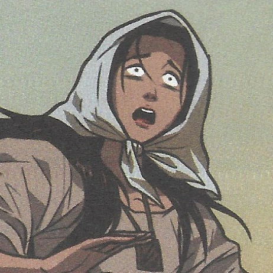

LP_ICT9T_Q1Project_Posadas_Rhaven.html
Characters in Noli Me Tangere
| CHARACTERS IN NOLI ME TANGERE |
 |
Crisostomo Ibarra |
- Ibarra, a sincere and optimistic young man. He used to study in San Diego, and desired to improve his home country.
- Ibarra was born with a silver spoon and raised by his father, Don Rafael Ibarra.
|
 |
Maria Clara |
- Maria Clara is said to be a compassionate, young lady. She hoped to inspire others to do good deeds.
- Maria Clara was raised by her aunt, Tia Isabel.
|
 |
Elias |
- Elias was an honorable, kind man.
- He grew up wealthy and was intially conceited.
|
 |
Capitan Tiago |
- Capitan Tiago is an influencial person in San Diego, even said to be the richest person in San Diego.
- He is selfless and weak as he doesn't know how to stand up for himself.
|
 |
Padre Damaso |
- Padre Damaso is an egotistic, opinionated Franciscan priest.
- Padre Damaso was the former town priest of San Diego.
|
|
Padre Salvi |
- The successor of Padre Damaso after he was forced to leave San Diego.
- Padre Salvi is power hungry and manipulative of the townspeople but less violent than Padre Damaso.
|
 |
Don Rafael Ibarra |
- A powerful, wealthy man born to a family of landowners.
- The father of Crisostomo Ibarra. He sent Crisostomo to study in Europe.
|
 |
Pilosopo Tasyo o Don Anastacio |
- Pilosopo Tasyo is a wise and diligent scholar.
- Left his studies due to his mother and married.
|
|  |
Sisa |
- Sisa is a caring mother of two, Basilio and Crispin.
- Sisa settled in San Diego and married to an abusive husband, due to her submissiveness she was never able to stand up to her husband.
|
 |
Crispin |
- Crispin is a clever boy, the younger brother of Basilio and the child of Sisa.
- Crispin got falsely accused of stealing from the church causing his arrest.
|
 |
Basilio |
- Basilio is an enthusiastic and positive individual.
- After his mothers death and the unkown disapearance of his brother, Capitan Tiago took him in.
|
 |
Donya Victoria |
- Donya Victoria is a self-conscious person, abandoning her roots of being a Filipino and pretending to know how to speak Spanish.
- Married her husband, Don Tiburcio, due to his name sounding like one of a Spaniards.
|
 |
Don Tiburcio |
- Don Tiburcio is the husband of Donya Victoria.
- Don Tiburcio is a fake doctor who claims to know medical skills.
|
 |
Donya Consolacion |
- Donya Consolacion loves to wear makeup.
- She is married to Alferez.
|
|
Alperes |
- The husband of Donya Consolacion
- He is of Spanish Blood.
|
 |
Tiya Isabel |
- Tiya Isabel raised Maria Clara and the cousin of Capitan Tiago.
- Serves as the cheif housekeeper in De Los Santos.
|
Back To Top
Read more>>
Read more>>